id="js_content" style="">
必须要提前感受的大师作品
关于爱情，我最喜欢两部电影，一部是莱奥·卡拉克斯的《新桥恋人》，还有一部就是今天要介绍的基耶斯洛夫斯基的《爱情短片》。
豆瓣评分8.8
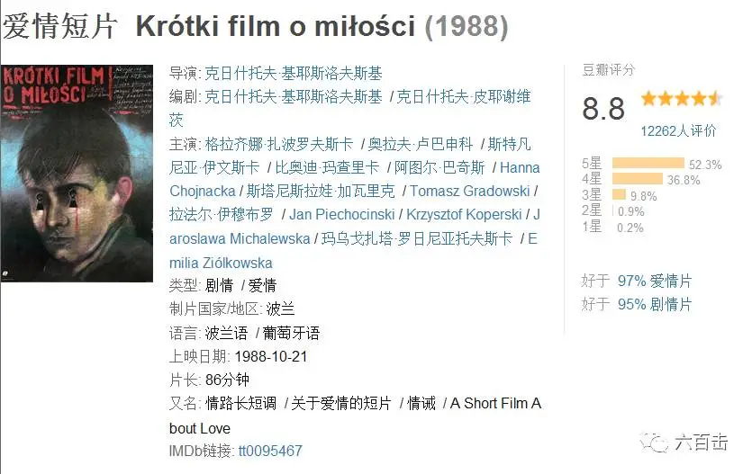
它是基氏伟大作品《十诫》中的第六部短片，后来扩展成将近一个半小时的电影，讲述了19岁男孩托米克暗恋并偷窥成熟美艳的女人玛格达的故事，故事并不复杂，台词也不多，场景也主要集中在公寓中的两个房间内，但却很深刻地描绘出现代人沉浸于肉欲、轻乎爱情背后的孤独和空虚。
电影广受好评
伯格曼遇见了希区柯克
《爱情短片》的故事形式是抽象的，大多时间及故事的形式停留于一种状态、一种动作:看/被看,窥视/被窥视之中。而关于偷窥，电影史中，除了这部电影之外，最著名的就是希区柯克的《后窗》，但是不同于《后窗》中杰弗瑞通过望远镜识破一起杀妻分尸案那样的悬疑，基耶斯洛夫斯基的“偷窥”是“伯格曼”式的沉思，希区柯克看到的是隐秘于平常生活下的罪恶，基耶斯洛夫斯基看见的是隐秘于内心的孤独。
《后窗》
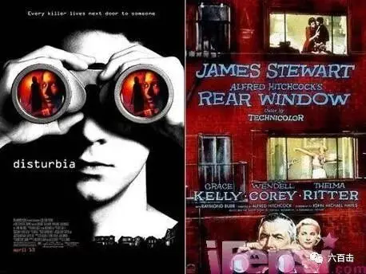
这部电影最特别的地方就是它的视角，始终都是爱的那方而不是被爱的那方看世界。
悬疑片大师希区柯克
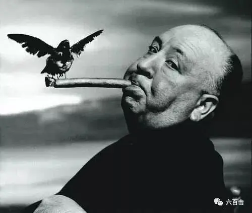
电影前半部分，场景都是通过托米克的主观视角来表现的，观众可以跟着托米克一起偷窥玛格达的生活，她是一个画家，一人独居，会带不同的男人回来享受肉体之欢
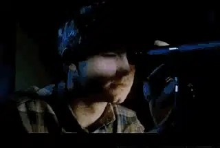
一个人的时候，玛格达常常是百无聊赖。
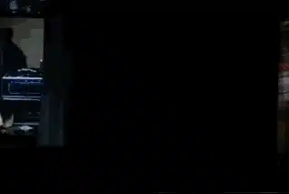
而这样的一系列正反打镜头之下，是心里意义之下的“正反打”，虽然没有对白，但是我们能够感受到托米克对于玛格达纯真的爱，而这也是符合我们的初恋体验的，绝大多数的初恋都是从暗恋开始的，对于爱情都是从可以远观但不可以亵玩的“偷窥”开始，托米克喜欢上了玛格达，他送空头汇票单、偷看玛格达的信件、早起送牛奶，想尽一切办法接近玛格达。
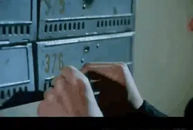
而这一视角的打破，是在托米克看到玛格达趴在桌上痛苦流泪之后，他告诉玛格达他在偷窥她。

托米克知道玛格达内心的孤独：你昨天哭了，不是么？
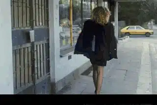
而当玛格达知道托米克偷窥她时，她问托米克为什么要偷窥她，这段对话非常有意思
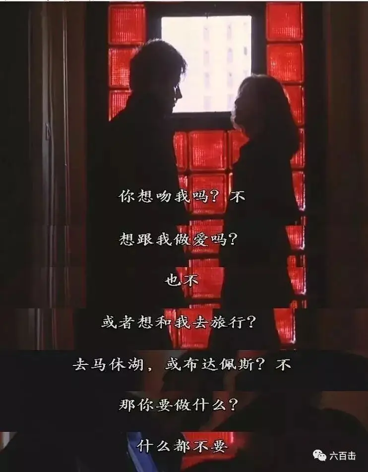
早已被爱情灼伤的玛格达根本不相信托米克的话，她知道，所有的男人接近她都是为了上床，托米克只是不敢承认而已，甚至觉得他是一个无耻的偷窥者。
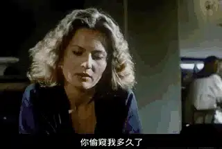
玛格达要戳穿托米克的虚伪，她带托米克来到她的家中，换上睡衣，她要求托米克像他看到的其他男人那样对待她，她拿起托米克的手，放在她的大腿上，要托米克摸她
在玛格达不停的挑逗之下，托米克早泄，玛格达冷冰冰的告诉他“这就是爱情，去卫生间洗一下”
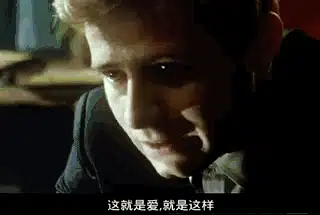
深受刺激和羞辱的托米克奔向了自己的家
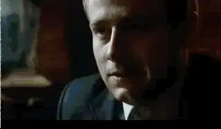
玛格达用这样的方式“狠狠”地击碎了托米克对于爱情的纯真想象，回到家中，绝望的托米克割腕自杀。
玛格达从窗户上看到停在楼下的救护车，她感到了不安，当她开始对托米克有所感觉时候，开始是同情，后来也许是良心的谴责，再后来也许是爱，这时，视角发生了调转，玛格达拿着望远镜看向托米克的家中，她希望托米克平安归来，然后告诉他“你是对的”
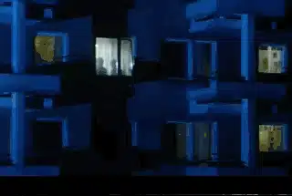
两个结尾
在电视版本中，是一个闭合的结局，当玛格达在邮局看到从医院回来的托米克时，他断然地对玛格达说:我不再偷窥你了。
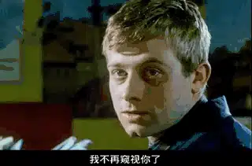
我更加喜欢电影版本的开放结局,托米克手术后依然昏迷不醒.玛格达来看望他,当她通过托马克的望远镜望向自己的房间时,玛格达仿佛瞥见了自己以往生活的影子,那是一个肉体狂欢内心空虚的孤影。
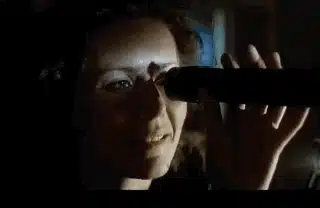
结尾并没有止于冰冷，而是通过想象给了我们温暖和希望：透过望远镜，她看到爬在桌上痛苦到奔溃的自己，而托米克用他温柔的手安慰着玛格达。显然，托米克对她的爱让玛格达重新发现了过去，发现了一种快乐，或者说她在过去曾经拥有而后已经失去的快乐，她重新肯定和相信了爱情。
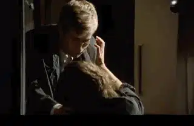
警示意义
除了艺术上的巨大成就，电影对于现代人的警示意义更加重要，我们从宗教、道德的他律中不假思索地跑向了自我感觉的自律之中，看似自由，却成了自我欲望的囚徒，我们用科学和金钱消解了爱情和婚姻中的神圣价值，将其“贬低”为一种生物行为和自我欲望的释放，在这种轻乎的态度之下，性解放以空前的速度蔓延，婚前性行为、婚外情、滥交让无数的人跌入到没有安全感和彻底的空虚之中。刚刚去世的美国色情杂志花花公子创始人休.海夫纳就是一个被灼伤的“托米克”，在他22岁的时候，直到新婚之夜前夕，他一直为妻子守着处男身，然而妻子却向他坦白她已不再是处女，这令他大受打击。从那以后，他总是觉得自己和妻子的床上存在着另一个人，两人的婚姻关系开始出现裂痕。最终他变成了纵欲的“玛格达”，一生沉浸于他缔造的感官王国之中，生活糜烂至极，至死也没有找到一个真爱。而更加恐怖的是，我们国家许多年轻人竟然将休.海夫纳看作最大的人生赢家。
休.海夫纳和他的兔女郎
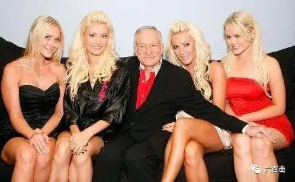
肉欲感觉的无限放大彻底放逐了我们的灵魂，我们标榜的自由也彻底地埋葬了真正的自由——最终，像玛格达一样，我们会丧失爱和相信的能力，我们不得不承认，我们无法掌控自己的欲望，反而会被欲望吞噬。感觉、欲望、道德、法律都不足以赋予爱情和婚姻以神圣的价值，我们必须要在信仰中重新找回爱情中神圣的那一面，毕竟，上帝才是爱情和婚姻的创造者，而上帝赋予爱情和婚姻的价值才是对我们真正的祝福和出路。
关注并回复： 爱情短片获取电影资源
这里没有挑逗你眼目情欲的小鲜肉
也没有挑动你肉体情欲的段子
更没有膨胀你今生骄傲的鸡血。
我们只在乎那些最质朴真诚的作品
在那里我们才能恢复真正的想象力
我们也坚信这才是我们真正需要的。

个人微信号：six_hundreds_hits
因苹果公司规定，微信iOS 版赞赏功能关闭
如对本文表示支持，苹果设备用户可通过以下微信二维码赞赏